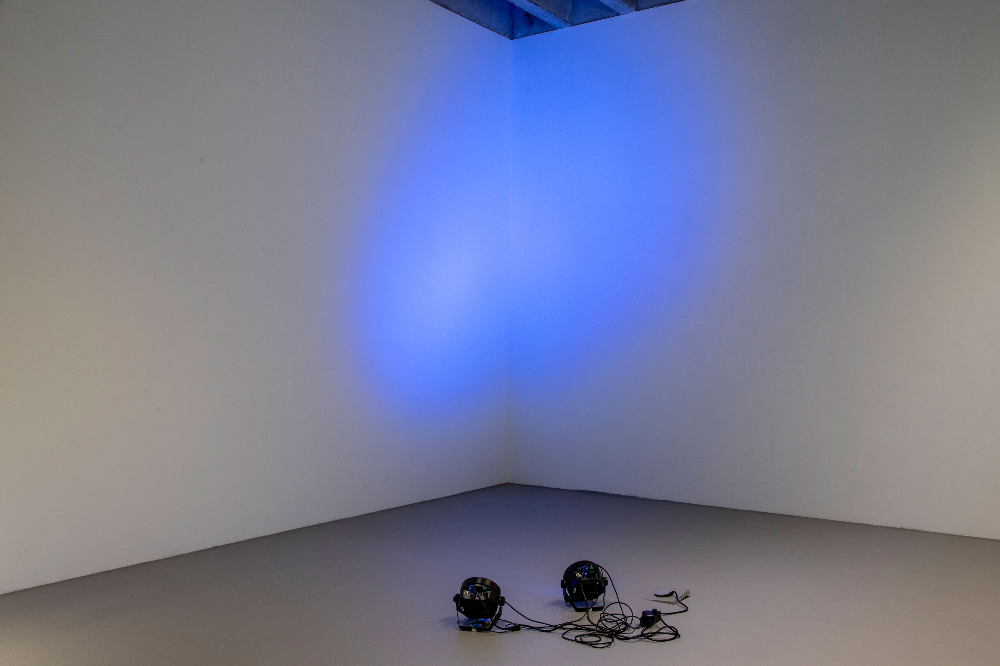
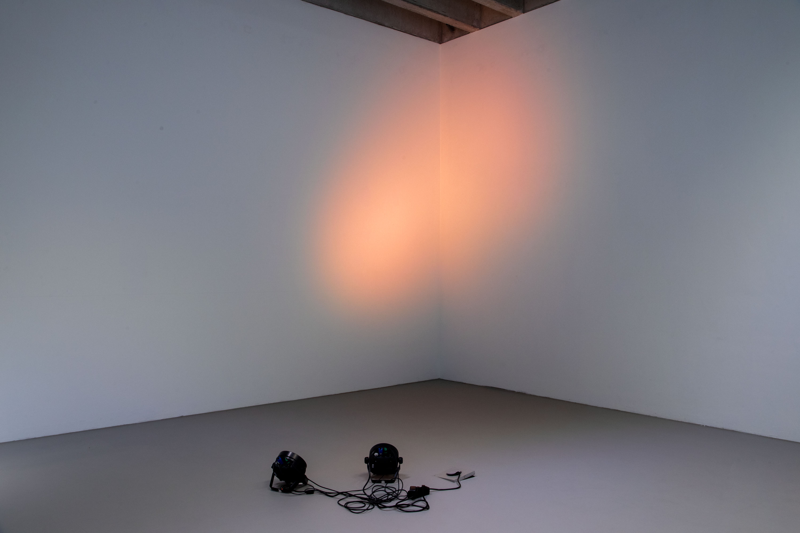
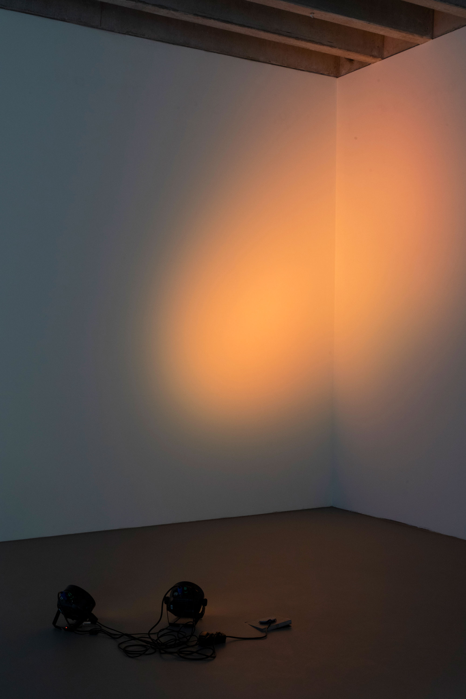
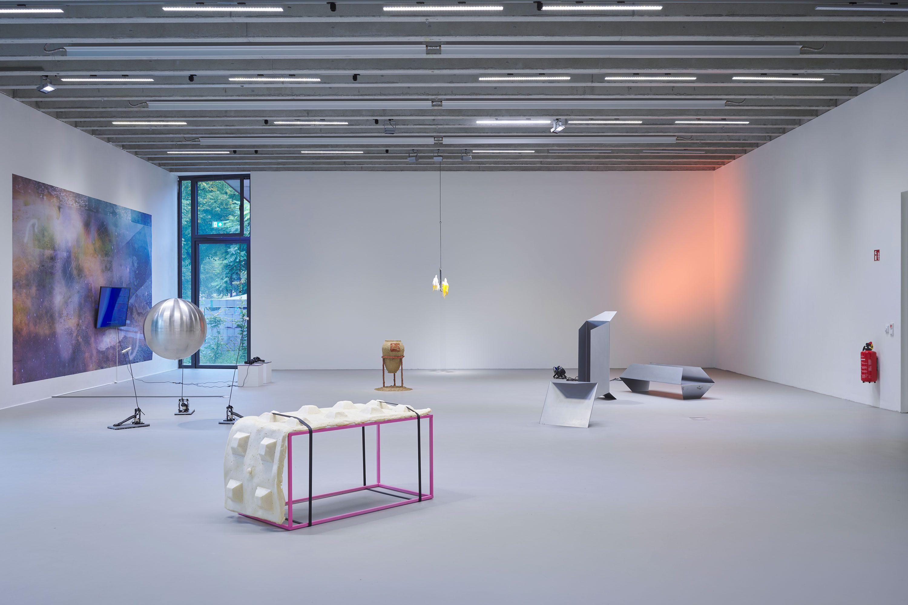
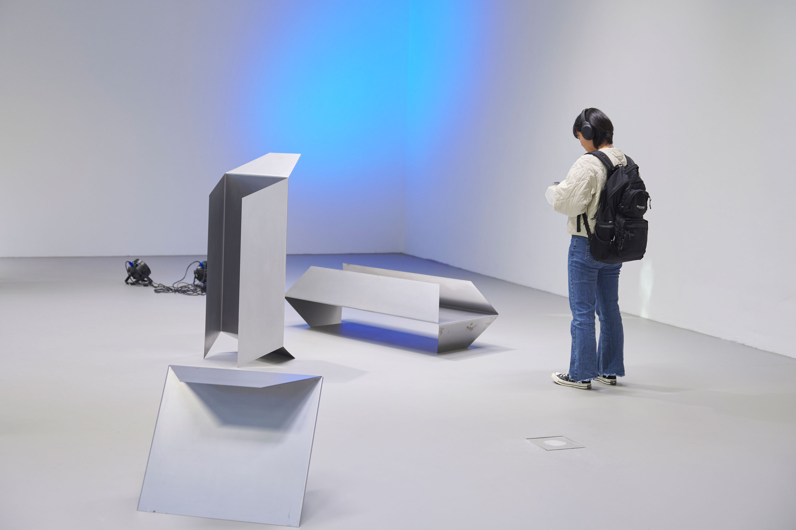
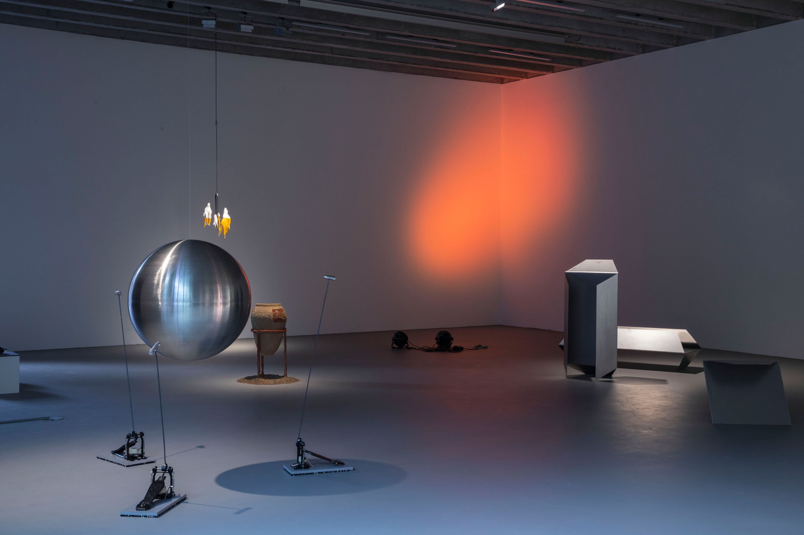

Jessica Arseneau



Photo credits: Jaewon Kim
Orange, Blue!, 2022
Led Installation
Variable dimensions
For the group exhibition Approaching the Unknown, we discussed the planet Mars as a place of contemplation and speculation since antiquity, as well as in the imagination of the future. The work Orange, Blue! references the color spectrum of sunsets on Earth and Mars. While the sunset on Earth has warm colors, the sunset on Mars has blue tones. It is interesting to note that it is these colors of light that influence the rhythm of biological beings - blue light waves like those of the sun stimulate us, while this effect is reduced with warm light tones such as the orange filter used for computer screens or smartphones.
The light installation oscillates between blue and orange in slow transitions passing into white. The beams are projected onto a wall surface.
DMX programming: thanks to Guillaume Arseneault for technical support


Photo credits: Tim Albrecht

Photo credits: Jaewon Kim
Approaching the Unknown, group exhibition views, Galerie der HFBK, Hamburg
The exhibition: https://kubaparis.com/submission/243628